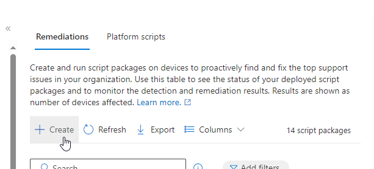

Intune Remediations¶
The Intune Remediations collection is a set of script packages designed to detect and fix common support issues on user endpoints. Each script package includes a detection script, a remediation script, and metadata. By deploying these packages through Intune, you can proactively address issues before end-users even notice them, potentially reducing support calls.
My Intune Remediations (GitHub Repository)¶
Device Compliance¶
This section includes scripts to ensure devices comply with your organization's policies, such as password requirements and encryption standards.
Device Configuration¶
Here you'll find scripts to configure device settings, including VPN configurations, Network Mapping, and other essential settings.
Device Performance¶
These scripts are designed to optimize device performance by managing disk space, memory usage, and other performance-related aspects.
Microsoft Defender AV¶
This category includes scripts to manage and remediate issues related to Microsoft Defender Antivirus, ensuring your devices are protected against threats.
Miscellaneous¶
A collection of various scripts that don't fit into the other categories but are still useful for maintaining and troubleshooting devices.
Step-by-Step Guide to Using Microsoft Intune Remediations¶
Prerequisites¶
- Device Enrollment: Ensure the device is enrolled in Intune.
- Licensing: Verify that the device has the necessary licenses (e.g., Windows 10/11 Enterprise E3/E5, Education A3/A5).
- Permissions: Ensure you have the appropriate permissions under the Device configurations category.
Steps to Create and Deploy Remediations¶
1. Download/Create a Detection and Remediation Scripts¶
- Detection Script: This script checks for the presence of an issue.
- Remediation Script: This script fixes the issue detected by the detection script.
2. Navigate to the Intune Portal¶
3. Create a Script Package¶
- Go to Devices > Scripts and remediations.
- Click on Create to create a new script package.

- Under the Basic Tab, Enter the Name and Description for the script package.
4. Upload Scripts¶
Under the Settings Tab:
- Detection Script: Upload your detection script.
- Remediation Script: Upload your remediation script (optional).

5. Configure Script Settings¶
- Enforce script signature check: Ensure scripts are encoded in UTF-8.
- Run this script using the logged-on credentials: Choose whether to run the script with user or system credentials.
6. Assign the Script Package¶
- Select Groups: Assign the script package to the appropriate device groups.
- Click Next and Review + Save.
7. Monitor Script Status¶
- Go to Reports > Endpoint Analytics > Scripts and remediations.
- Monitor the status and results of the script execution.
Best Practices¶
- Testing: Test your scripts in a controlled environment before deploying them widely.
- Logging: Include logging in your scripts to help with troubleshooting.
- Updates: Regularly update your scripts to address new issues and improve performance.